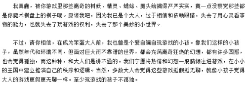
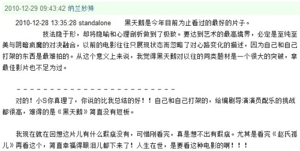
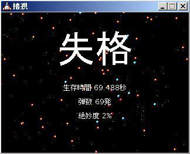

i wish to go somewhere strange
Did you remember that day we talking about something out of there; and the atmosphere is
totally nowhere of space.
抛却后半句那么一点点的装孙子意味，这句话实在正确
有个LuckySort，说是这种算法是世界上最好的算法，因为让它排序的数据总是排序好的，所以它的时间复杂度为O(0) Orz.....
还有个Bogosort，说是给一副扑克让它排序，它先检查是不是排好序的，如果没有，就。。。" throwing
the deck into the air"(我擦，好喜感)，然后再检查，until...
伪码也很喜感：
while not inOrder(deck)
doshuffle(deck);
这算法的最坏时间复杂度为无穷大~~~动手去写了个，现在正在试验它的性能，哈哈
Windows is a complex system; putting a programming layer on top of the API doesn't eliminate
the complexity——it merely hides it. Sooner or later that complexity is going to jump out and bite you in the leg. Knowing the API gives you a better chance at recovery.
何勇的幽灵，Kurt的Love Buzz，Radio Head的Creep，Massive Attack的某些；呃，暂时想到这么多
对了，JD
顺便把地址贴下
http://acm.swust.edu.cn/
另外听说别的大学也有这个系统，会不会水平更高点？
预感这首应该对狼王的口味
xiami精选集from
http://www.xiami.com/song/showcollect/id/1025260
PS近况：C个不停~~~~
越想越喜感~~
我需要再洒脱点。。。。。。
非洲
里面提到技术的发展需要有道德走在之前，否则就可能带来灾难。觉得这里用意识形态是不是更合适点？人类能发展到今天，显然意识形态是走在技术之前的——但这是不是个不变法则？doubtful呃。。。
这东西好像我一直不厌其烦地说，，烂了都
约略有点小学时星期天将尽的感觉。。。
一个叫Trials的游戏；我擦，，，这根本就是Cube嘛？！！！整个氛围让人毛骨悚然。。。。
昨晚的梦，梦见和一个姑娘谈恋爱；她的名字很怪，而且中间那个字我死活想不起来了；；
整个的内容呢，也很怪，，和感觉——语言不足以形容
(为避嫌，声明，她不是现实中任何一个人)
擦。。我这是饥渴了吗？~~~~~~~~~~
有时候还真想，如果能摒弃掉对爱情的渴望该会多么轻松，，如同摒弃对金钱、虚荣的渴望。但不同后者，爱情在人类一贯的意识形态里都始终是件美好的东西呢，，所以，除非你变成个真正的“怪”人，否则如何摒弃得掉。。。。sigh.
《铁皮鼓》；
今儿本想早看早睡的，好像九点开始看，，结果。。。额滴个娘哎，2小时43分
片子完全看不懂；也已然没有精力再去douban了
真的救救我啊。。。。
比较纠结的是找来找去找个双语字幕，，完了开始看才发现是西班牙语的..OMG
以下from douban:
1、

i feel something...
2、
某评提到《卖火柴的小女孩》....蓦然曾经的记忆，，忽然感动了还
all right,我又看不下去了。。。也是每次电影完伴douban都12点+，，扛不住了缘故
8
现在蛋疼地用EasyRecovery往D盘恢复中......

嗯。。。非常不错
算是看好这么段电影来唯一部觉得不水了的
只是。。。。只是。。。why这n部电影里女主角都没胸nie~~~~~~~~~~~(YMPK)
PS: Natalie老了 T_T...
图还是删了吧，，谁半夜这么一看还挺容易被吓着的~~
另外，惊悉剧中有Winona Ryder...曾经相当惊艳的印象啊——如今这一打扮还真是没认出来
i'm going to douban~
再来个douban上有趣的：
MS douban上低评价的大意都是这种主题的片子已经被拍烂了，，好吧。。。我没怎么看过这类型的
反正觉得好
还有跟FC比的，，，我擦，FC跟这是一回事吗？

哇哈哈哈哈哈
这次下的这个版本效果不怎么样，mark之，以后下高清——呃。。。比较清的去
shit...不知何时起影评总是难耐着性子看完了；另外这片的douban真TM长
so...this is the end.
表白被拒，她说：
“估计会灭灯”
T_T...
当幸福来敲门 这译法还可以，不过到底不遵原意；so,边栏用英文了
偷抢拐骗完；无甚好说，another 《Pulp Fiction》，只是MS没那么有味
另外，里面不少那谁的曲子—— matrix 里 dissolved girl 同作者的曲子
打算把看过的电影和书列出来，大学之后(2010.9)的列页面边上；再早的没系统记录，放这了
先电影
这几个单独拿出来：
搏击俱乐部 (Fight Club) [with Brad Pitt & Edward Norton]
罪恶之城 (Sin City)
辛普森一家
低俗小说 （Pulp Fiction）
一级恐惧 (Primary Fear)
沉默的羔羊 (The Silence of The Lambs)
蝙蝠侠6：黑暗骑士 (The Dark Knight)
松子令人嫌弃的一生
大鱼 (Big Fish) [by Tim Burton]
剩下的随意了：
太阳照常升起
控制 (Control) [about Ian]
Last Days [about Kurt]
乐火焚城 [about Jim Morrison]
无耻混蛋
现代启示录
落水狗
教父
唐璜
杀死比尔
阳光小美女
2001太空漫游
异形
巴别塔
21克
上帝之城
西藏七年
12猴子
七宗罪
特洛伊
指环王
American History X
草叶
25th Hours
红龙
Cube
电锯惊魂
浓情巧克力
剪刀手爱德华
理发师陶德
加勒比海盗
欲望号街车
Finding Nemo
查理和巧克力工厂
拆弹部队
Waking Life
Lolita
情人 (The Lover)
滑板公园 (Ken Park)
教室别恋 (All Things Fair)
水果硬糖 (Hard Candy)
月球
千里走单骑
泰坦尼克
Big Blue
Leon
Another Berlin's Girl
断背山
绿巨人
肖申克的救赎
飞越疯人院
1984
发条橙
禁闭岛
西北偏北
我的野蛮女友
燕尾蝶
我是传奇
上甘岭
亚历山大
天国王朝
9mm
战争之王
夜访吸血鬼
新的了的名单 (纠错《辛德勒的名单》 感谢Fours提醒)
拯救大兵瑞恩
侏罗纪公园
可可西里
平衡 [纪录片]
第一滴血
洛基
恐龙 [动画片]
黑夜传说 (Underworld)
黑客帝国 (Matrix)
梦想照进现实
杜拉拉升职记
蝴蝶效应
X战警
本能
地平线事件 (/黑洞表面)
300
柏拉图式的性爱
星际旅行I
火柴人 [?]
海上钢琴师 (The Legend of 1900)
狮子王 [动画片]
雨人
云之彼端，约定的地方
接触
Up
第九区
V字仇杀队
大腕
码头风云
天下无贼
不见不散
苹果
色戒
手机
帝国陷落
13th Floor
索拉里斯星 [美国版]
Sunshine
蒂凡尼的早餐
罗马假日
索多玛120天
功夫
月光宝盒
猜火车
罗拉快跑
有些可能看过没记起来，，还有些看过但都不好意思承认自己看过的，比如 阿凡达、全民超人 什么的
下来是书，这个不像电影那么干脆，早前看的实体有些是合辑，分不太清
先几个作者：
王小波
王朔
李敖
韩寒
儒勒·凡尔纳
郑渊洁
书：
基督山伯爵
三个火枪手
茶花女
百年孤独
卡夫卡 [这是作者。。。-___-b]
鲁宾逊漂流记
白鲸 (Mobby Dick) [我不是意淫我看的英文版啊~~~~]
魔戒 [呃。。。指环王 当时看的就叫魔戒]
文化苦旅 [damn,,初中]
深渊上的火
天渊
安德的游戏
安德的影子
死者代言人
外星屠异
狼毒
人变火星人 [原名应该不是这个，不过不知道怎么翻译]
汤姆索亚历险记
哈克贝利芬历险记
爱丽丝梦游仙境
老人与海
永别了，武器
伊甸园
尘埃落定
战争与和平
麦田里的守望者
哈利波特
骆驼祥子
昆虫记
动物解放
细胞生命的礼赞
物种起源
惊人的假说
水母与蜗牛
皇帝的新脑
自私的基因
编码的奥秘
再来几个科幻短篇：
诗云(刘慈欣)
吞食者(刘慈欣)
一日囚 (柳文扬，，一路走好)
猎户座防线
彩虹尽头 (费诺·文奇)
真名实姓 (费诺·文奇)
生存实验 (王晋康)
赡养上帝 (刘慈欣)
伤心者 (何夕)
朝闻道 (刘慈欣)
伤离别 (何夕)
有预感这篇要相当长，回车用多了，再装B点可以全加上书名号，但那样实在太B了
写这个没想炫耀，只是想记录；
不过没准是有炫耀的成分在里边，哎, whatever吧
复习《太阳照常升起》，
陈冲演得非常他妈的棒，，
又哭了次
The Saw 7
让子弹飞
非诚勿扰2
赵氏孤儿
山楂树之恋
鬼子来了
I feel 没意思......
这是一篇被删掉的；原题“哎呦”，有图，无真相。
勿好奇；只是个瞬时糟心使然产物
怎么感觉别人都这么棒？
或此成为这俩礼拜的墓志铭；MML.....拜托我不要再这么轻浮了
陪同学来网吧打魔兽。
本未要来；但数次拒绝各种活动已然不好意思，这次权当补过吧
《Inception》完。狼王还没看是吧？那不剧透了。
也没太多好说的。。。那个《Shutter Island》是谁拍的？
老给我看这种电影要疲劳的。。
(10.23 23:32)不知何出;也许你现在需要不带偏见地去接受事物--你从出来后自我暗示太多了
(10.30 13:56)回城堡去？哈！我是要回城堡去！
不再想着向别人推荐什么确是轻松;在听范晓萱的《鬼娃娃》
(11.1 22:26)看到《安》里有关嫉妒,哎呦,讨厌这种情绪(嫉妒)
(11.2 8:28)孩童是天真,略微被社会性浸透后就变可厌;这是不可逆的,于是只能再前进来摆脱这泥淖
被Ting影响去下了孙燕姿听 却完全已然无初中听流行的感觉(10.27 00:16)
看记录浸入其中忽想说说又发现没人了;表意点讲还真怀念那段通宵聊的日子(10.27 22:46)
记录里忽现以前一篇日记,现在看起来相当有感觉--还真是要在那么的状态下才写得出那么的文字--装是装不来的(同上 23:11)
“其实我最好的打算是...”MD看到这句感觉严重温馨,我真想人生能有如那般(同上 23:16)
忽想联系一高时那个班主任;我这现在怎么那么欲望找说话人...(10.28 下午)
看记录里聊的pixies又听来pixies;确有感觉--其实这段时间来基本也就pixies听出感觉了,其他要不没有要不只小过场(10.28 21:12)
“undressing in the sun”(anna)多美的意象...
pixies听得真舒服(the happening),想给她推荐去立马又想去他妈的蛋(10.28)
自己想到哪种状态里去终于明白了:这么一种沉浸--从中出来后对现世完全不顾忌;不顾忌爱情,不顾忌自己在大众眼中的模式--因为梦之地是那般迷人和可爱,现世有什么好在乎的呢？(10.29 17:40)

在上英语听力课，so.....
哈 你以为自己无所谓她是一种高姿态,但同时,你怎么知道人家就在乎你呢？所谓快乐,是给回忆的不是给你的;。所谓相见不如怀念这我也不感冒--记忆中的她是你主观经历中曾经那个她,与现实现时的那个家伙无关。(10.20 22:58)
假想:
“那篇blog什么意思啊？”
“哪篇？”
“最近的那篇”
“以为你不看blog呢”
“不许转移话题！”
“没转移呃 就一时感想么 想到了就写出来了”
“你是不是觉得我可没意思？”
“我不了解你 无从评说 倒是确觉得我们现在这关系有点没劲”
“那我们以后别说话了”
“可以 不过那不是会造成裂痕么？”
(10.20 22:58)
每天中午睡起都是浑身累，叹词啊呀呃呃云云。一上午基本看数学过去，中午吃过饭床上继续看会儿《安》(倒也不那么看着没劲了)，睡去。给Ting的Oasis、《FightClub》云云想必都没有看，记录想必亦然。某时就愤慨这些人怎么这么推不动--紧而愤慨和嘲笑自己怎么每每失败还是这么孜孜不倦地想去敲醒或说推荐给别人东西。某时又冒出句“你们这些人简直就是在应付生命！”;某时又颓然自己未必就做了出什么了....言不及思;但倒未觉乏力或自厌的感觉--或是如今没严重思考什么。不挣扎了，而又空空然如寂廖了，，想去看鲁迅去，想然会晕染文笔。我希望将这苍白的生活用些更透彻的、直裸的笔端揭发出来。
别要流于自我循环的臆想呀！
(10.22 pm2:33)
我实在是每次来发时都没有临时写的欲望。。。。等我买电脑吧~~~~
书能带你脱离这世俗的世界 [9.15 pm10:??]
就像把三维的物体强行压扁以求一幅二维的画面。——这就是企图以文字还原生活之观感时发生的事。
[10.5 am9:29]
“当某种东西进化到某种程度时，它宁可选择死亡，也不愿演变为自己的对立面” ——《沙丘救世主》
文字也是一件隐藏彼此的工具，免得我们太赤裸裸的相见 [10.6 pm6:37]
“你懂得越多，你就越像这个世界的孤儿” ——《1988》
“…并不是情深说话总不够，并不是我有那么多的倾诉欲望，我只是想把一个尽量完整的自己告诉她。” ——《1988》
“…去往已知却不详的前方” ——《1988》
“（婊子和戏子）这两个名词从来不是对妓女和演员这两种职业的称呼，而是女孩子两种生活状态的描述” ——《1988》
我这怎么说来要沉默结果最后是自己最不沉默；像个外物在笑话自己 （10.8 pm11:14）
“行善本身就是回报” ——《沙丘》
“从某方面来说，孩子，每个创造性的活物都会带来灾难” ——《沙丘之子》
so slow, so vax...
wat the hell am i doin'?